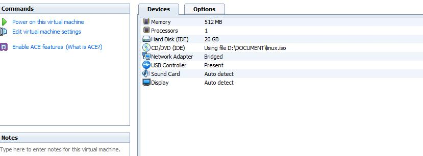
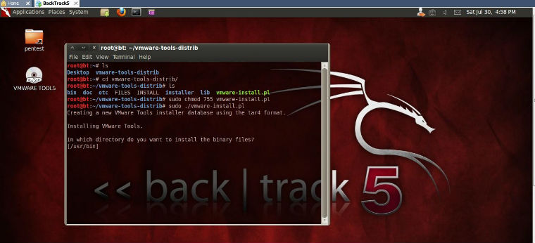
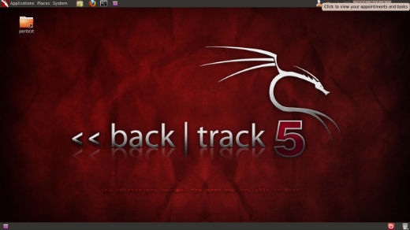

Linux分区挂载
硬盘的分区分为主分区和逻辑分区，一块硬盘最多只能有4个主分区。主分区是用来存放操作系统引导信息的，但并不要认为一块硬盘最多只能安装4个操作系统，因为只有Windows和FressBSD等操作系统才需要将自己安装在硬盘的主分区里面，而Linux呢，可以被安装在逻辑分区里面。
分区编号
Linux将所有的存储设备(包括硬盘)都挂载/dev目录下新建一个子目录来管理，比如下面:
/dev/hda1 第一块IDE硬盘的第一个主分区
/dev/hda2 第一块IDE硬盘的第二个主分区
/dev/hda5 第一块IDE硬盘的第一个逻辑分区(逻辑分区从5开始，1~4一定不会是逻辑分区)
/dev/sda1 第一块SATA硬盘的第一个主分区(USB设备也用sd表示)
挂载点
所谓挂载点，就是将分区挂到一个以“/”开头的目录中。
/: 根目录，必须挂载的目录，是所有其他目录的基础。现在安装ubuntu都有桌面系统，所以大概分配10~20G给根目录。
swap: 交换分区，相当于windows当中的虚拟内存，在linux中将其单独分离出来 ...
comments
Read More
Backtrack一些基本配置
查看网络配置信息
root@bt:/# ifconfig -a
手动激活未使用的网卡eth0
root@bt:/# ifconfig eth0 up
通过DHCP自动为eth0网卡分配ip地址
root@bt:/# dhclient eth0
也可手动为eth0网卡分配ip
root@bt:/# ifconfig eth0 192.168.1.105 netmask 255.255.255.0
添加网关
root@bt:/# route add default gw 192.168.1.1
查看dns配置信息:
root@bt:/# cat /etc/resolv.conf
编辑dns配置信息:
root ...
comments
Read More
Backtrack5安装Adobe reader看PDF
Linux下的办公软件Openoffice和Libreoffice都很不错，小巧的foxit reader也很好，不过我还是习惯用adobe reader，所以还是决定在bt5下安装adobe reader。
1、下载压缩包到/tmp
root@bt:~# cd /tmp
root@bt:/tmp# wget -c http://221.1.222.15:82/down/AdbeRdr9.4.2-1_i486linux_enu.tar.bz2
2、下载好之后解压:
root@bt:/tmp# tar jxvf AdbeRdr9.4.2-1_i486linux_enu.tar.bz2
tar: Record size = 8 blocks
AdobeReader/
AdobeReader ...
comments
Read More
BT5开机自动启动ibus
BT5下安装中文输入法：
BT5下安装ibus输入法管理器:
sudo apt-get install ibus
在System——>IBUS Preferences 选择Chinese——>Pin yin 输入法
怎么让BT5 开机自动启动IBUS呢，不然每次开机手动启动确实很麻烦的。这里是方法:
开机自动启动ibus输入法管理器:
System >> Preferences >> Startup Applications
Click the button: Add
Name: ibus daemon
Command: /usr/bin/ibus-daemon -d
好了，重启就可以了。
按Ctrl+空格调出输入法 ...
comments
Read More
BT5如何安装VMware Tools
虚拟机安装VMwareTools有什么好处呢？我认为安装了VMwareTools之后最大的好处莫过于可以支持文件拖放拷贝和鼠标可以自由出入了，你可以很方便地将你Windows里面的东西拷到BT5里面，也可以很方便地将BT5里面的东西拷贝到Windows里面来。下面说说如何安装VMwareTools。
首先，你在启动虚拟机BT5之前你必须将CD/DVD(IDE) 设置里将包含vmware-tools的Iso启动文件选上。这里，我的是D:\DOCUMENT\linux.iso，大小116M。接着设置开机连接CD/DVD，启动BT5。

还是老规矩：输入用户名root；密码toor；启动图形界面:startx; 这时你会发现桌面上多了个光驱自动加载的VMWare tools文件:

先将文件夹里面的文件vmware-tools-distrib 拷贝到目录~/root下，然后照着下面这张图做就可以了。
记得一定要先改变先sudo chmod 755 vmware-install.pl不然可能会出现 no such file or directory。这会让你很崩溃的，明明有vmware-install.pl竟然提示不存在？！

接着按照提示做就可以了。遇到没有权限访问xxx ...
comments
Read More
Backtrack初探
一般你去网上一搜Backtrack，出来一堆都是说用backtrack来破解无线网络密码的，似乎强大的backtrack俨然给我们的第一印像就是一个蹭网的工具而已，扫扫Wifi，破解破解WEP/WPA/WPA2加密什么的,实属不该~
Backtrack,中文不知道该翻译成啥，回溯？Backtrack是基于Slackware和SLAX的自启动运行的操作系统，它的初衷是给计算机安全领域用的。包含安全审计和渗透测试。Backtrack(简称BT)，现在最新的是今年5月份发布的Backtrack5,我现在用的就是BT5,Ubuntu gnome桌面的，你可以选KDE桌面，因为之前我用惯了ubuntu，所以选了gnome的。 在BT5之前还有BT2,BT3,BT4,BT4R2什么的，我接触的比较晚，只接触过BT4R2和BT5。就这两个来说，BT5界面上面确实比BT4R2眩多了。上靓图:

其实呢，Backtrack之所以吸引我的原因是因为它上面集成了无数无比强大的黑客工具（渗透工具），其中包含大家非常熟悉的强大的扫描工具nmap，Nessus等等，强大的Sniff工具Wireshark等，可以说是当前渗透测试人员和网络安全专家必备的测试平台。可不仅仅是蹭网的哦。
comments
Read More
Linux桌面系统KDE和GNOME
Windows的成功告诉我们，用户体验很重要。因为并不是所有人都希望能只能对着一个黑乎乎的shell来进行所有的操作。至少大多数人是不喜欢这样的操作方式的。当前linux上得桌面系统主要可以分为KDE和GNOME。
KDE
特点是界面美观，设置和使用相对复杂。KDE在UNIX，许多Linux发行版，FreeBSD上都得到应用。使用KDE作为默认桌面管理系统的linux发行版本大概有：Debian GNU/Linux，Fedora Core，Gentoo Linux，Kubuntu,SUSE Linux，FreeBSD以及纯正的UNIX等。
GNOME
以前说GNOME没有KDE漂亮还可以接受，但现在Ubuntu的强势发展，使得GNOME也不断完善。特别是GNOME的3D桌面动态效果是很吸引新人使用的。可以说，GNOME现在已经是一种非常成熟的桌面系统，具有易用性，稳定性等特点。现在，越来越多的linux发行版本都开始支持GNOME桌面系统了，连BACKTRACK这样的非主流linux系统，在BT5发行里面就有GNOME的桌面，这一点足以证明GNOME的市场成功了。
comments
Read More
Linux包管理系统RPM和Deb
本质上来说，包也是linux应用软件的一种。用过一段时间linux的人都知道，一般linux中安装软件都是通过包的形式安装的。目前最流行的两种包的管理系统是Red Hat的RPM包和基于Debian发行版本的Deb包。
RPM包管理系统
Linux家族中有五十多种发行版本是基于Red Hat的RPM包管理系统的。有欧洲最流行的发行版SUSE/OpenSUSE，有著名的Red Hat企业版，我国发行的红旗linux等等。由于Red Hat在linux业界的领导地位，使得RPM包管理方式俨然成了linux业界的工业标准。
- rpm -vih file.rpm #安装RPM包
- rpm -e file.rpm #卸载RPM包
- rpm -qpR file.rpm #查看RPM包依赖关系
- rpm -q file.rpm #查看系统已经安装的rpm包
Deb包管理系统
RPM包管理系统应用虽然广泛，但本身具有很难解决包依赖关系的问题，这点上，基于Deb的包管理系统俨然是一种更好地选择。使用Deb包管理系统的linux发行版本有Debian和近几年很火的Ubuntu。现在，Ubuntu可以说在linux个人桌面市场上是一枝独秀，这也是的基于Deb包的管理方式被更多人所熟悉。跟RPM包不同的的是，Deb包里面包含的是二进制文件和一些config文件，也可以直接打开来看。但是Deb包管理系统提供了丰富的安装 ...
comments
Read More
Linux压缩命令
在平常的Linux接触过程中，各种压缩文件经常遇到。使用压缩文件的好处显而易见，可以节省空间并且节约网络流量传输的开销，所以学会各种压缩文件的使用是不可避免的一项技能。自己平常使用的再加上一些网上搜集的，估计够全了，简单地写在这记下，方便查阅：
压缩文件 (解释: x——解压 c——压缩 v——显示过程 f——压缩包名字)
tar格式
tar xvf A.tar
tar cv A.tar directory
gz格式
gunzip -d A.gz
也可用 gzip——gzip A.gz
tar.gz/tgz格式
tar zxvf A.tar.gz 解压至当前目录
tar zcvf ...
comments
Read More